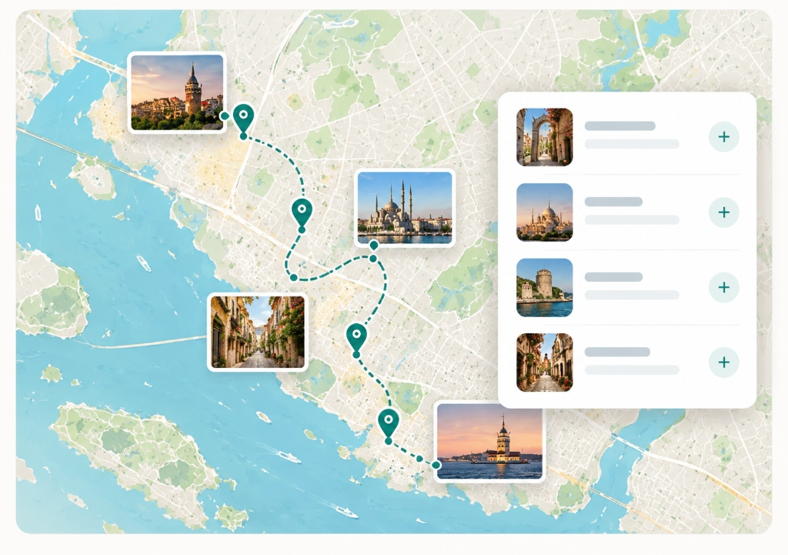

Nasıl Çalışır?

1. Konumunu seç
Gitmek istediğin ülke veya şehri belirle.
→

2. Yerleri keşfet
İlgi alanlarına göre gezilecek yerleri listele.
→
3. Rotanı oluştur
Seçtiğin yerlerden kişisel rotanı oluştur.
